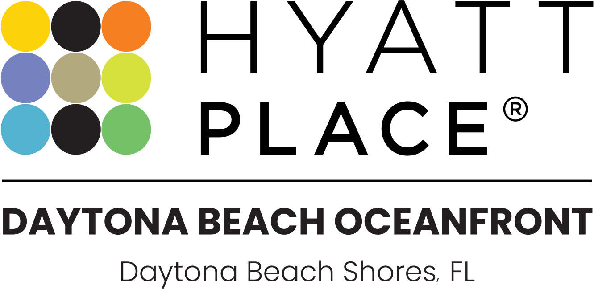
Hodges Ward Elliott (“HWE”) is pleased to exclusively offer for sale the fee-simple interest in the Hyatt Place Daytona Beach Oceanfront (the “Resort”, “Hotel” or “Property”), a 143-key select-service hotel located directly on the Atlantic Ocean in Daytona Beach Shores, FL. The Hotel benefits from a highly visible, irreplaceable beachfront position along South Atlantic Avenue, just minutes from Daytona Beach’s world-famous attractions and eight miles from Daytona International Speedway.
Daytona Beach is recognized as one of Florida’s most established leisure markets, drawing more than 4.5 million annual visitors in 2024 with its 23 miles of sandy beaches, motorsport events, collegiate competitions, and year-round festivals. The area is supported by strong drive-to leisure demand and convenient regional access via Daytona Beach International Airport (DAB), Orlando International Airport (MCO), and Orlando Sanford International Airport (SFB).
Offered fee simple and unencumbered of management, the Property represents a rare opportunity to acquire a beachfront asset in one of Florida’s most dynamic and resilient leisure destinations.
| Address: | 3161 South Atlantic Avenue, Daytona Beach Shores, FL 32118 |
| Rooms: | 143 |
| Floors: | 10 |
| Year Built: | 1975 |
| Year Renovated: | 2013 |
| Class: | Upscale |
| Land Area: | ± 1.45 AC |
| F&B Outlets: | The Placery |
| Meeting Space: | 482 SF |
| Amenities: |
|
| Interest: | Fee Simple |
| Management: | Unencumbered |
| Labor: | Non-Union |
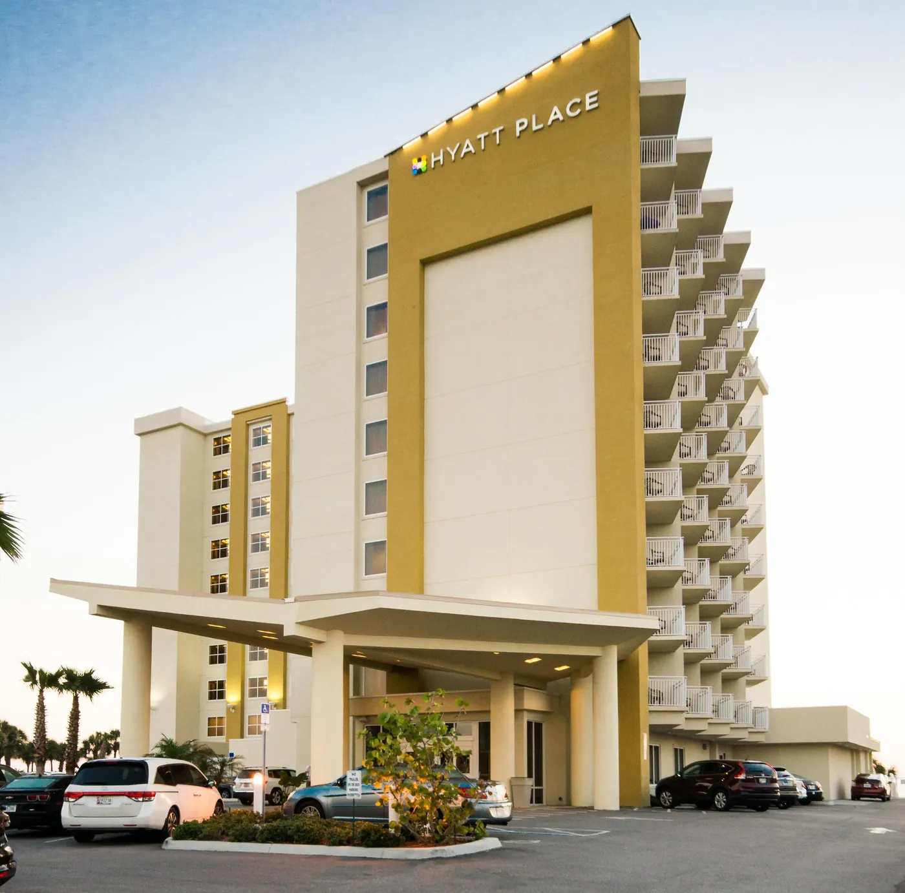
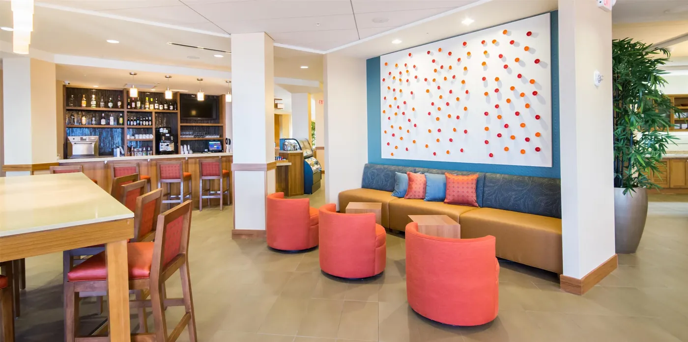
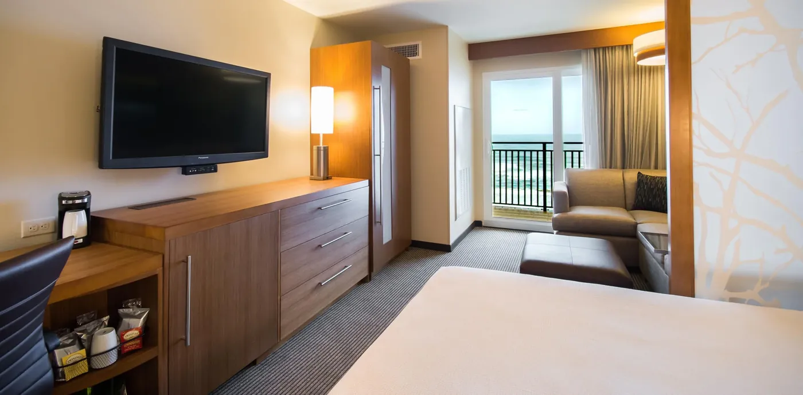
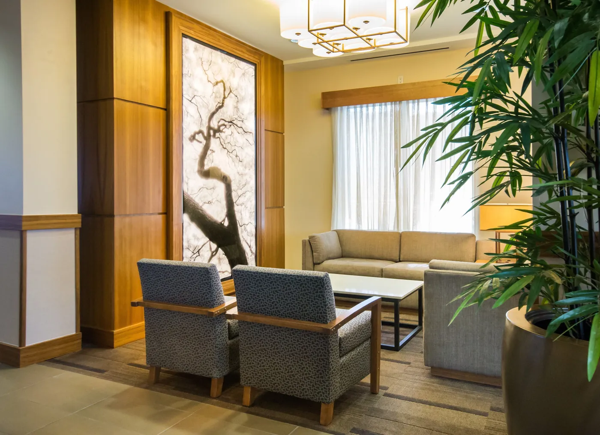
Investment Highlights
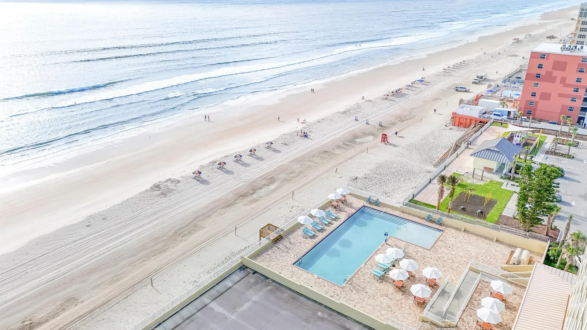
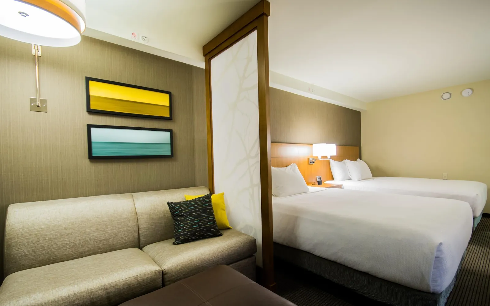
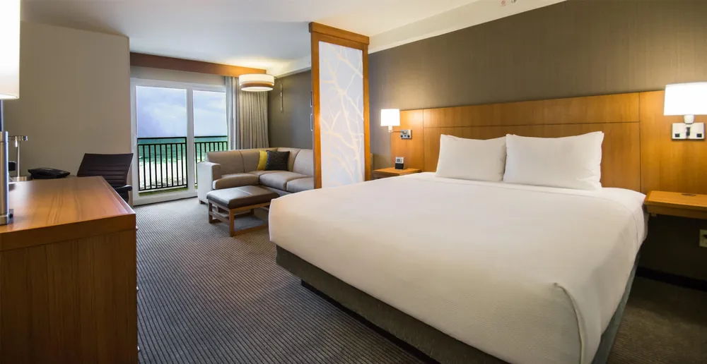
Irreplaceable Oceanfront Location on Daytona Beach Shores
Situated on a premier stretch of Daytona Beach Shores, the Hyatt Place benefits from an irreplaceable oceanfront location that provides guests with direct beach access and uninterrupted Atlantic views. Unlike the more congested core of Daytona Beach, Daytona Beach Shores offers a more relaxed and upscale environment.
The Property’s positioning enables it to consistently capture leisure and event-driven demand while standing out through its direct beachfront accessibility. This unique combination of oceanfront location and proximity to Daytona’s signature demand drivers establishes the Hotel as a highly competitive lodging option within the market.
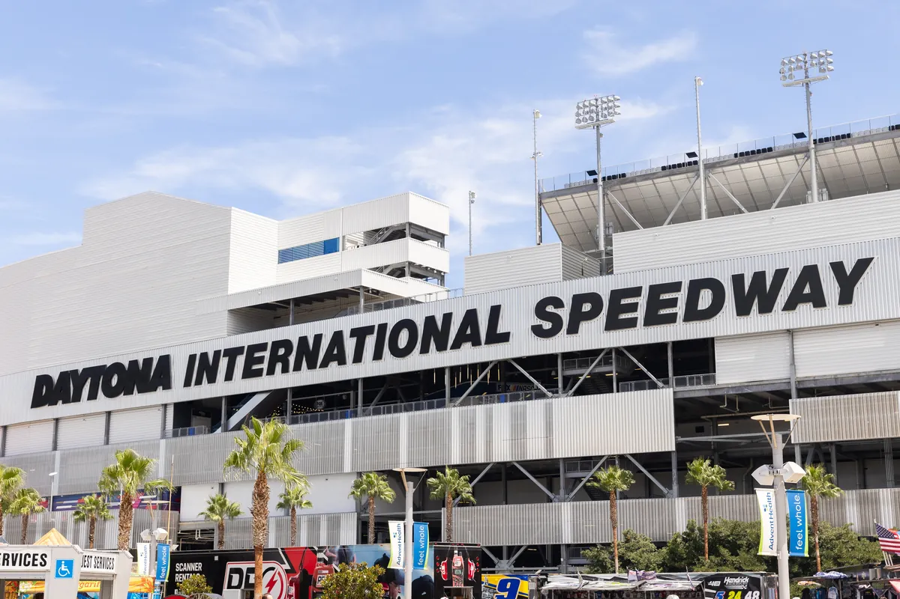
Robust Attractions & Year-Round Events
Daytona Beach has evolved into a multifaceted destination that appeals to a wide spectrum of travelers. In addition to its renowned beaches, the area features a diverse lineup of attractions including the Ocean Center Convention Center, currently undergoing a $40 million renovation, Daytona Lagoon Waterpark, Ponce Inlet Lighthouse & Museum, Main Street Pier, and numerous golf courses and nature preserves. This breadth of entertainment options creates a strong foundation of recurring leisure and family demand.
The market also benefits from a packed annual calendar of nationally recognized events that drive substantial repeat visitation. Highlights include the Daytona 500, Bike Week, Biketoberfest, Jeep Beach, Coke Zero Sugar 400, collegiate cheer and dance championships, spring break gatherings, and a variety of cultural festivals. These events draw hundreds of thousands of visitors each year, ensuring robust compression periods and reliable demand spikes for local lodging.
Daytona Beach Bike WeekView details
Collegiate Cheer & Dance ChampionshipView details
Jeep BeachView details
Incredible Upside Potential
Anchored by its highly coveted Atlantic oceanfront location, the Hotel presents a compelling opportunity for a new owner to unlock significant upside through a targeted renovation program, repositioning the asset with refreshed guestrooms and updated public areas. With a strong base of year-round leisure demand and a robust calendar of recurring events, the Hotel is well positioned to close the performance gap with its comp set peers. Aligning the Property’s product quality with its premier beachfront setting would allow it to capture higher-rated demand, drive meaningful ADR growth, and materially improve RevPAR penetration over historical levels.
Optimal Offering – Fee Simple, Unencumbered by Management
The Property is offered fee simple and free and clear of existing management and financing, affording new ownership maximum optionality in the future operation and capitalization of the Hotel.
Access the
Offering Memorandum
To receive the full Offering Memorandum and access data room materials, please execute the Confidentiality Agreement below.